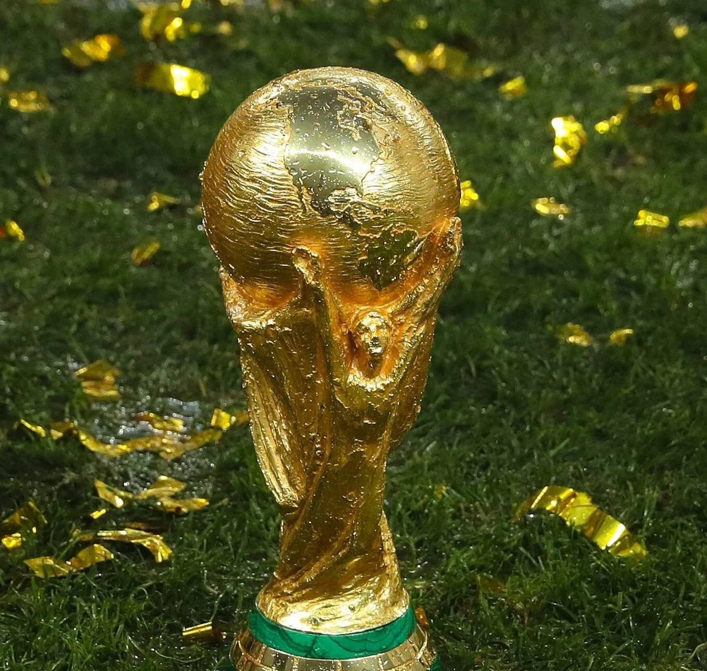

Principais campeonatos
O futebol, um dos esportes mais populares do mundo, é regido por um conjunto de regras essenciais que garantem o jogo justo e emocionante. Aqui estão as principais regras que o moldam:
- Copa do Mundo da FIFA: Este é o torneio de seleções nacionais mais prestigioso do mundo, realizado a cada quatro anos. É organizado pela FIFA e envolve equipes de todo o mundo.
- UEFA Champions League: É o principal torneio de clubes na Europa, envolvendo os melhores clubes de futebol do continente. É altamente competitivo e atrai grande audiência global.
- Copa Libertadores: É o equivalente sul-americano da UEFA Champions League, envolvendo clubes da América do Sul. É uma competição ferozmente disputada e muito popular na região.
- Copa América: É o torneio de seleções nacionais da América do Sul, similar à Eurocopa. É uma das competições mais antigas e prestigiosas do mundo.
- Eurocopa: É o torneio de seleções nacionais da Europa, realizado a cada quatro anos. É a principal competição de seleções na Europa.